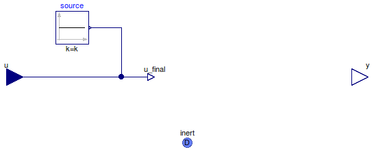

Table of Contents
- User's Guide
- Blocks
- Conditions
- Assemblies
- Regions
- Subregions
- Connectors
- Characteristics
- Units
- Quantities
- BaseClasses
Download
- Latest: FCSys-2.0.zip (**Please check back soon or contact kdavies4 at gmail.com.)

| Name | Description |
|---|---|
| Partial model of a condition |
 FCSys.Conditions.InertDalton.BaseClasses.PartialCondition
FCSys.Conditions.InertDalton.BaseClasses.PartialCondition
| Type | Name | Default | Description |
|---|---|---|---|
| Axes with linear momentum included | |||
| Boolean | inclLinX | true | X |
| Boolean | inclLinY | false | Y |
| Boolean | inclLinZ | false | Z |
| Specification | |||
| Boolean | internal | true | Use internal specification |
| Constant | source | redeclare Modelica.Blocks.So... | Source of internal specification |
| Measurement | |||
| RealOutput | y | Measurement expression | |
| Type | Name | Description |
|---|---|---|
| input RealInput | u | Value of specified condition |
| InertDalton | inert | Connector for linear momentum and heat, with additivity of pressure |
| Measurement | ||
| output RealOutput | y | Measurement expression |
partial model PartialCondition "Partial model of a condition" extends FCSys.Conditions.BaseClasses.Icons.Single; parameter Boolean inclLinX=true "X"; parameter Boolean inclLinY=false "Y"; parameter Boolean inclLinZ=false "Z"; parameter Boolean internal=true "Use internal specification";replaceable Modelica.Blocks.Sources.Constant source if internal constrainedby Modelica.Blocks.Interfaces.SO "Source of internal specification"; FCSys.Connectors.RealInput u if not internal "Value of specified condition"; FCSys.Connectors.RealOutput y "Measurement expression"; FCSys.Connectors.InertDalton inert(final n_lin=n_lin) "Connector for linear momentum and heat, with additivity of pressure"; protected final parameter Integer n_lin=countTrue({inclLinX,inclLinY,inclLinZ}) "Number of components of linear momentum";FCSys.Connectors.RealOutputInternal u_final "Final value of specified condition"; equationconnect(source.y, u_final); connect(u, u_final); end PartialCondition;